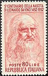
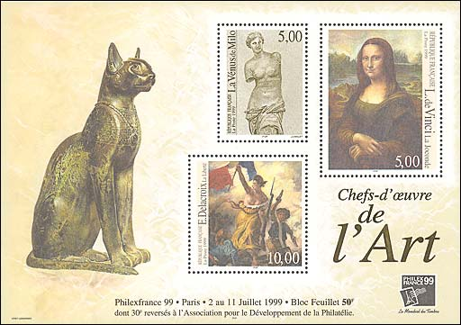
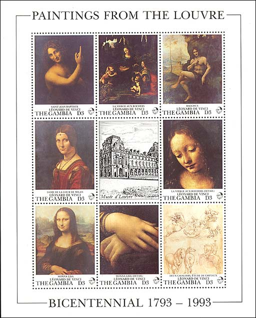
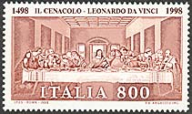
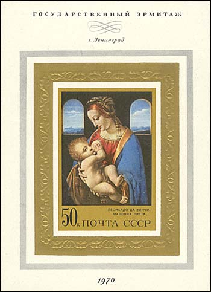
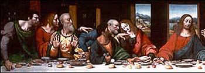
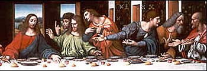

Leonardo da Vinci - 500
 |
 |
I have offended
God and mankind because my work did not
reach the quality it should have (Da Vinci's dying words)
In the year 2002 UNESCO celebrated one of the greatest cultural events in the history of humanity, the 550th birth anniversary of the Italian artist Leonardo da Vinci.
The illegitimate son of a 25-year-old notary, Ser Piero, and a peasant girl, Caterina, Leonardo was born on April 15, 1452, in Vinci, Italy, just outside Florence. His father took custody of the little fellow shortly after his birth, while his mother married someone else and moved to a neighboring town. They kept on having kids, although not with each other, and they eventually supplied him with a total of 17 half sisters and brothers.
Growing up in his father's Vinci home, Leonardo had access to scholarly texts owned by family and friends. He was also exposed to Vinci's longstanding painting tradition, and when he was about 15 his father apprenticed him to the renowned workshop of Andrea del Verrochio in Florence. Even as an apprentice, Leonardo demonstrated his colossal talent. Indeed, his genius seems to have seeped into a number of pieces produced by the Verrocchio's workshop from the period 1470 to 1475. For example, one of Leonardo's first big breaks was to paint an angel in Verrochio's "Baptism of Christ," and Leonardo was so much better than his master's that Verrochio allegedly resolved never to paint again. Leonardo stayed in the Verrocchio workshop until 1477 when he set up a shingle for himself.
In search of new challenges and the big bucks, he entered the service of the Duke of Milan in 1482, abandoning his first commission in Florence, "The Adoration of the Magi". He spent 17 years in Milan, leaving only after Duke Ludovico Sforza's fall from power in 1499. It was during these years that Leonardo hit his stride, reaching new heights of scientific and artistic achievement.

The Duke kept Leonardo busy painting and sculpting and designing elaborate court festivals, but he also put Leonardo to work designing weapons, buildings and machinery. From 1485 to 1490, Leonardo produced a studies on loads of subjects, including nature, flying machines, geometry, mechanics, municipal construction, canals and architecture (designing everything from churches to fortresses). His studies from this period contain designs for advanced weapons, including a tank and other war vehicles, various combat devices, and submarines. Also during this period, Leonardo produced his first anatomical studies. His Milan workshop was a veritable hive of activity, buzzing with apprentices and students.
Alas, Leonardo's interests were so broad, and he was so often compelled by new subjects, that he usually failed to finish what he started. This lack of "stick-to-it-ness" resulted in his completing only about six works in these 17 years, including "The Last Supper" and "The Virgin on the Rocks," and he left dozens of paintings and projects unfinished or unrealized (see "Big Horse" in sidebar). He spent most of his time studying science, either by going out into nature and observing things or by locking himself away in his workshop cutting up bodies or pondering universal truths.
Between 1490 and 1495 he developed his habit of recording his studies in meticulously illustrated notebooks. His work covered four main themes: painting, architecture, the elements of mechanics, and human anatomy. These studies and sketches were collected into various codices and manuscripts, which are now hungrily collected by museums and individuals (Bill Gates recently plunked down $30 million for the Codex Leicester!).

Back to Milan... after the invasion by the French and Ludovico Sforza's fall from power in 1499, Leonardo was left to search for a new patron. Over the next 16 years, Leonardo worked and traveled throughout Italy for a number of employers, including the dastardly Cesare Borgia. He traveled for a year with Borgia's army as a military engineer and even met Niccolo Machiavelli, author of "The Prince." Leonardo also designed a bridge to span the "golden horn" in Constantinople during this period and received a commission, with the help of Machiavelli, to paint the "Battle of Anghiari."
About 1503, Leonardo reportedly began work on the "Mona Lisa." On July 9, 1504, he received notice of the death of his father, Ser Piero. Through the contrivances of his meddling half brothers and sisters, Leonardo was deprived of any inheritance. The death of a beloved uncle also resulted in a scuffle over inheritance, but this time Leonardo beat out his scheming siblings and wound up with use of the uncle's land and money.
From 1513 to 1516, he worked in Rome, maintaining a workshop and undertaking a variety of projects for the Pope. He continued his studies of human anatomy and physiology, but the Pope forbade him from dissecting cadavers, which truly cramped his style.
Following the death of his patron Giuliano de' Medici in March of 1516, he was offered the title of Premier Painter and Engineer and Architect of the King by Francis I in France. His last and perhaps most generous patron, Francis I provided Leonardo with a cushy job, including a stipend and manor house near the royal chateau at Amboise.
|  |
 |
 |
|
 |
Although suffering from a paralysis of the right hand, Leonardo was still able to draw and teach. He produced studies for the Virgin Mary from "The Virgin and Child with St. Anne", studies of cats, horses, dragons, St. George, anatomical studies, studies on the nature of water, drawings of the Deluge, and of various machines.
Leonardo died on May 2, 1519 in Cloux, France.
Legend has it that King Francis was at his side when he died, cradling
Leonardo's head in his arms. Source.
(After:)
An especially notable characteristic of Leonardo's paintings is his landscape backgrounds, into which he was among the first to introduce atmospheric perspective. The chief masters of the High Renaissance in Florence, including Raphael, Andrea del Sarto, and Fra Bartolommeo, all learned from Leonardo; he completely transformed the school of Milan; and at Parma, Correggio's artistic development was given direction by Leonardo's work.
We show above stamps and sheets that display some of the most renown paintings of Leonardo, like Mona Lisa and The Last Supper. The self-portrait of Leonardo, issued by Italy in 1952 in order to celebrate his 450 anniversary of death, belongs to author's most appreciated stamps of his collection. Point on stamps with the mouse index for more information.